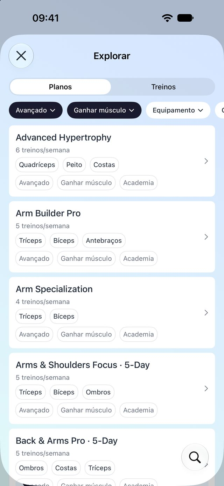
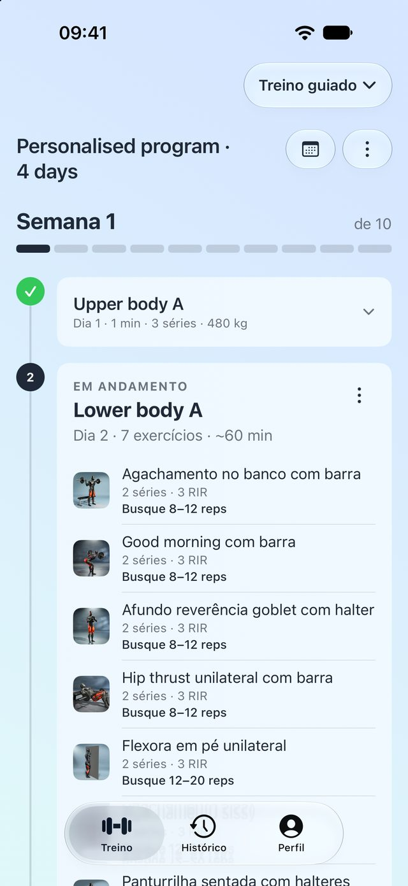
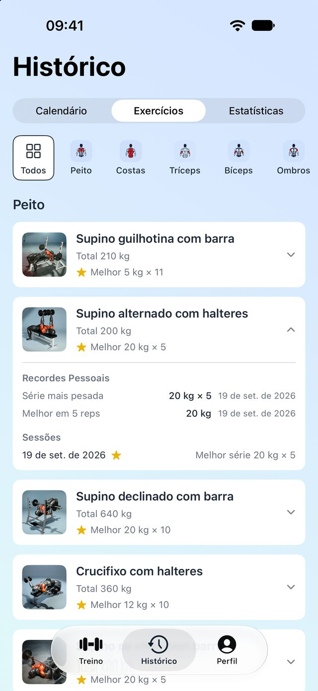
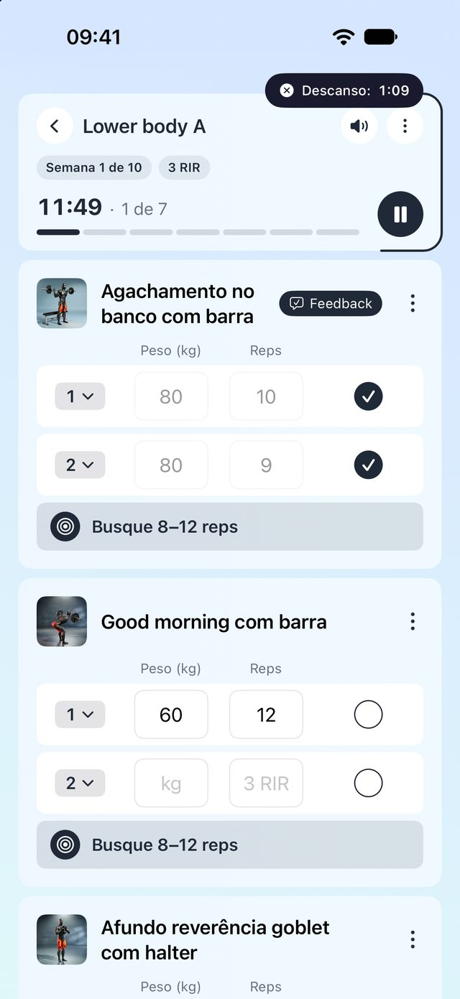
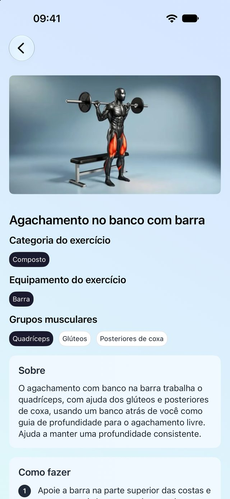

Responda algumas perguntas e receba um programa de várias semanas montado em torno do seu objetivo. Cada sessão diz o que levantar, quantas repetições buscar e quanto se esforçar — e seu feedback molda a semana seguinte.
Grátis para começar · Assinatura Pro para o Treino guiado



Um programa que se adapta a você, um registro que se preenche sozinho enquanto você treina e 300 exercícios com os quais dá para aprender de verdade.
Diga ao LiftSmart seu objetivo, sua rotina, seus equipamentos e os músculos em que quer focar. Ele monta um programa de várias semanas — ou você começa por uma das 138 fichas prontas.

Navegue por fichas de várias semanas e treinos avulsos por nível, objetivo e equipamento. Salve os que gostar em pastas e comece quando quiser.
Vídeo de demonstração, mapa de músculos e equipamento para cada movimento — mais Sobre, Como fazer e Dicas. Nunca mais pesquisar no meio da série.

Não importa o que você treine — sessão guiada, ficha ou treino rápido — tudo vai para um único histórico. Recordes pessoais são detectados automaticamente.
O registro é grátis para sempre. O LiftSmart Pro libera o Treino guiado e treinos salvos ilimitados, mensal ou anual.
Escolha exercícios e treine — sem programa. Cronômetros de descanso, registro de séries e resumo no final.
Cada série registrada fica guardada para sempre: calendário, histórico por exercício, volume por grupo muscular.
Detectados automaticamente na hora em que você bate um, em cada faixa de repetições.
A biblioteca inteira com orientações é grátis, incluindo busca e filtros por músculo.
Salve até quatro treinos de graça. O Pro remove o limite.
Treino guiado — programas personalizados e todas as fichas de várias semanas — mais treinos salvos ilimitados.
Um app de registro guarda o que você fez. O LiftSmart também decide o que você faz depois: monta a ficha, define metas semanais e as ajusta com o seu feedback. A parte de registro está incluída e é grátis.
Não. O questionário pergunta o seu nível, e as fichas para iniciantes começam leves e evoluem aos poucos. Todo exercício tem vídeo e passo a passo.
Não. Com os treinos rápidos você escolhe os exercícios e treina sem programa nenhum, e tudo vai para o seu histórico mesmo assim.
Registro, histórico, recordes pessoais, a biblioteca de exercícios e até quatro treinos salvos são grátis para sempre. O LiftSmart Pro libera o Treino guiado e treinos salvos ilimitados. Os preços aparecem no app na sua moeda, mensal ou anual.
Não. Você pode começar como convidado. Entrar com Apple ou Google mantém seus dados seguros se você trocar de celular ou reinstalar.
iPhone com iOS 26 ou posterior. Os cronômetros de descanso aparecem como Atividades ao Vivo na tela bloqueada e na Dynamic Island.
Não. Sem anúncios, sem venda de dados, sem rastreamento em outros apps. Os detalhes estão na Política de Privacidade.
Seu objetivo. Sua ficha. Seu registro.
Baixar naApp StoreFeito para iPhone · iOS 26 ou posterior · Grátis para começar, assinatura Pro para o Treino guiado